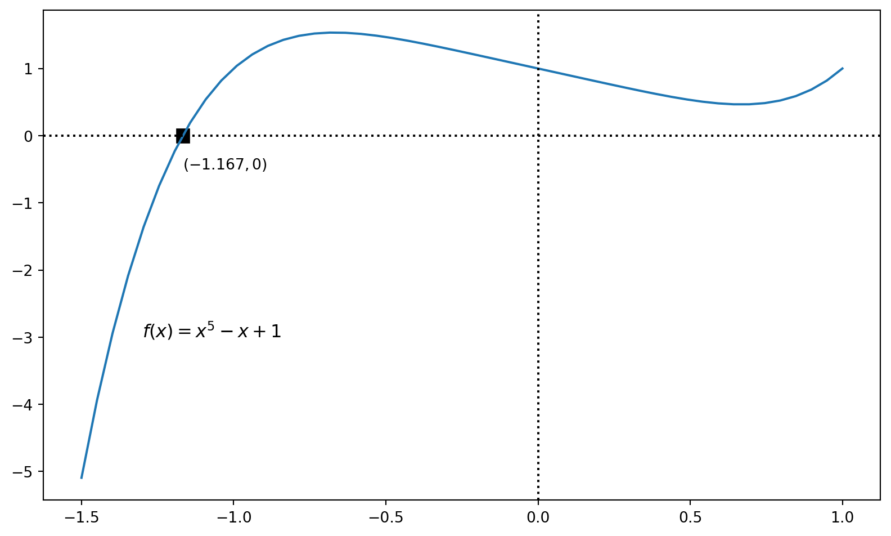

If you throw a rock at the internet right now, you’re likely to hit an article venting concerns about the role that ChatGPT may play in helping students cheat. Essentially overnight, asking students to write a short essay has become somewhat automatable. The world now has a machine that can generate original prose, and for now, it will do so for free. Usually, its writing style is decent or better. Sometimes, it gets facts correct. That is: it can passably accomplish the tasks educators often ask of those learning to write, and it will do so on demand in a matter of seconds.
For many, especially this sudden shift in the status quo is terrifying. I absolutely understand and empathize with this reaction. But, I also think we can chart a course forward by taking a lesson from math education.
Solving Equations
I’ll ask you to grant me a premise: let’s suppose that you’re a student in a calculus class today – that is, in the year 2023. A teacher has asked you to solve the equation \(x^5 - x + 1 = 0\) by providing an answer that is correct to three places beyond the decimal. This is a pretty silly premise, and it’s an especially silly equation, but let’s run with it.
In the early twentieth century, there were many numerical tactics for solving equations like that. One of my personal favorites is Newton’s Method, which is brilliantly illustrated in this graphic (courtesy of Wikipedia):
Newton’s Method
Newton’s method is an absolutely delightful and clever use of basic calculus concepts wrapped together to give good approximations of solutions to equations. I mean it unironically when I say that this strategy is beautiful. This would be a great tool for approximating solutions to our equation at hand. Indeed, even fifty years ago, that might have been exactly the kind of tool a student would have used to answer the original question.
It is also not what a student would use today.
A modern high school student would (hopefully) use a graphing calculator to answer this question. By graphing the nonzero side of the equation, they’d probably see something like this:
Show code
import numpy as npimport matplotlib.pyplot as plt# define the polynomial and the x-coordinates to be used in the graphexample_polynomial = np.poly1d([1,0,0,0,-1,1])x_coords_graph = np.linspace(-1.5, 1, 50)# find the real roots of the polynomialexample_solution = [i for i in np.roots(example_polynomial) if np.imag(i) ==0]# extract the real component, round it, and remove it from the ndarrayexample_solution = np.real(example_solution).round(3)[0]fig, ax = plt.subplots()ax.plot(x_coords_graph, example_polynomial(x_coords_graph))# axis linesax.axhline(color ='black', linestyle =':')ax.axvline(color ='black', linestyle =':')# add square on location of rootax.add_patch(plt.Rectangle((example_solution -0.02, -0.1), width =0.04, height =0.2, color ='black'))ax.text(x =-1.3, y =-3, s ='$f(x) = x^5 - x + 1$', size =12)ax.text(x = example_solution, y =-0.5, s ='$({} , 0)$'.format(example_solution))plt.show()

Since we just want a root of the polynomial, many modern tools would just write it directly on the graph, like this. If the tool didn’t, students would still have options for proceeding; they could zoom in near the black intersection point to discover its \(x\)-coordinate to the necessary precision, or they may be able to use an equation solver built into their calculator to get what they need.
Newton’s Method – the beautiful strategy I mentioned earlier – isn’t what students would reach for anymore, especially as a first option.
When calculators first entered the classroom, many math educators worried about what would be lost if we de-emphasized computation. And to be clear, some things have been lost; for instance, Newton’s Method now enjoys a less prominent role in modern calculus classes than it used to. Students also no longer routinely graph functions by hand, even though such an act does require careful thought and synthesis of many mathematical concepts. Many other mathematical techniques have slowly faded into the background due to the techno-cultural revolution ushered in by graphing calculators.
And yet, by any measurable standard, things in mathematics education are better now than before the arrival of graphing calculators. More students are learning more things at a deeper level, even if those things aren’t the same collection of things as they used to be.
In recognition that tasks like approximating solutions to equations are less interesting than they used to be, mathematics education has changed. Priorities have shifted, and teaching strategies and assessments have followed. The discipline has evolved.
Chatbots and Writing
I can’t help but wonder if the release of ChatGPT, and the deluge of similar AI tools that are sure to follow in the coming months, could be a calculator moment for humanities. Entire curricula have been developed around asking students to demonstrate understanding in the form of written prose. Tools like TurnItIn have become popular as ways to identify if students are submitting work written by others. These tools were built on the premise that unoriginal work would probably be duplicated elsewhere. This was a nice premise; may it forever rest in peace. Entire apparatuses have been unpheaved. It’s not that change is coming; change is now here.
Let’s lean into it.
First, we should get the ugly part out of the way. If educators give the same assessments that we’ve always given, then yes, students will use ChatGPT to take shortcuts and submit work that isn’t theirs. This is a great reason for educators to change up their assessments.
Second: although many worry that students may submit work generated by a chatbot, let’s remember what the chatbot does: it is a probabilistic model that predicts the likeliest thing to come next in a sequence. It is, reductively, autocomplete on steroids. On its best day, it delivers what is almost by definition an average thing that one might find on the internet. On its worst day, it gets facts completely wrong (but it will do so in very nice prose).
Currently, average things are generally regarded to be acceptable. But what if chatbot output became the new floor, rather than a middling thing begrudgingly regarded as sufficient? Is there a room in education to design around this new technology by asking students to start from it and build atop it?
Bloom’s Taxonomy
For the most part, chatbots are bottomfeeders in Bloom’s taxonomy. They can recall most things with decent accuracy, but they understand nothing. They will eloquently explain their lack of understanding to you if you ask them, and they will demonstrate it to you if you give them the chance. They cannot reason; they can provide you with “I Can’t Believe It’s Not Reason,” i.e. the output of statistical models that typically falls apart admist modest provocation.
There might be an opportunity here for educators to reset expectations. Once, math classes asked students to manually construct graphs of functions; now, math classes ask students to use graphs of functions to solve problems. Perhaps, instead of hoping only for students to use words well – which a machine can now do with reasonable fidelity – perhaps we can ask for those words to be interesting.
Actionable Suggestions for Educators
Here’s what I’ve decided to do as an educator regarding the advent of chatbots. I won’t be so arrogant as to call this “advice,” because I have no idea if it will work, but it feels right to me in this cultural moment.
Play with it. This is the most important suggestion imaginable. Every instructor must internalize what this tool can do, and just as importantly, what it can’t do. Feed it your own homework assignments. Toss it questions to which you already know the answers. Toss it questions to which you don’t know the answers, then look up the answers to see how it did. Don’t rely on articles riding the hype wave to understand this tool; if you’re an educator, you know the potency of experiential learning, and the same principle applies here. The limitations of chatbots are just as important as their capabilities, and you will only deeply understand either by trying it.
Consider whether the tool has a place for learning in your classroom. At the top of this post, I had a graph of the polynomial from the opening question; for any interested readers, there’s a “Show Code” button right above the graph. I’ve been learning Python for the last few months, and I wanted to use that graph as a small exercise for myself to reinforce my own learning. I hadn’t done anything with polynomials yet, so I needed some new syntax; I asked ChatGPT for some help (“How do I graph polynomials in Python?”), and it pointed me to np.poly1d() with a helpful example in code. I should mention that I didn’t actually use any of the code samples it gave me; rather, I broke off its suggestion of np.poly1d() and incorporated it into my own code that I cobbled together through the usual means (i.e. documentation, previous code I had written, and Stack Overflow questions). Essentially, I used it in place of a Google search, and I found it to be very helpful. If I found it suitable for such use myself, I feel that I owe it to my students to share that use with them.
If something is now lost, ask yourself what remains important. You will probably find that some things from your classes – perhaps many of them – are now automatable. Ask yourself: if a task can be trivially automated, is it worth continuing to assess students’ mastery over it? The answer may well be yes! As Philippe Barbe recently observed, we still teach multiplication tables in grade school, and for very good reason, despite the existence of calculators. It is absolutely fine to decide that a skill remains a relevant part of the learning process despite its automation. But educators have a moral obligation to be continually intentional about such decisions.
Once you have decided on the important learning outcomes, put students in a room and have them show that they meet the standards. Perhaps that means restricting their technology access so that they do not have AI tools; or, perhaps it means using AI tools as an integrated part of assessments.
I would suggest a potential North Star for course design, a uniform learning outcome that cuts across all disciplines: good classrooms should foster the ability to think. Everything else is secondary, and anything that was previously just a proxy for thinking can be discarded or replaced.